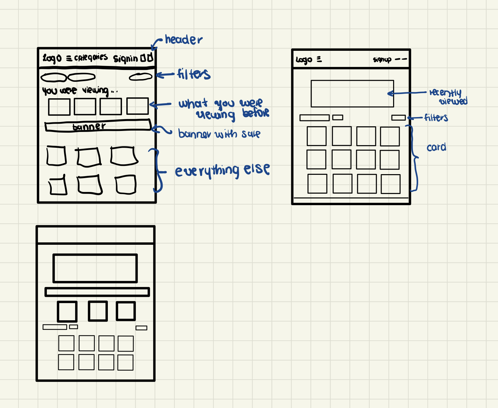
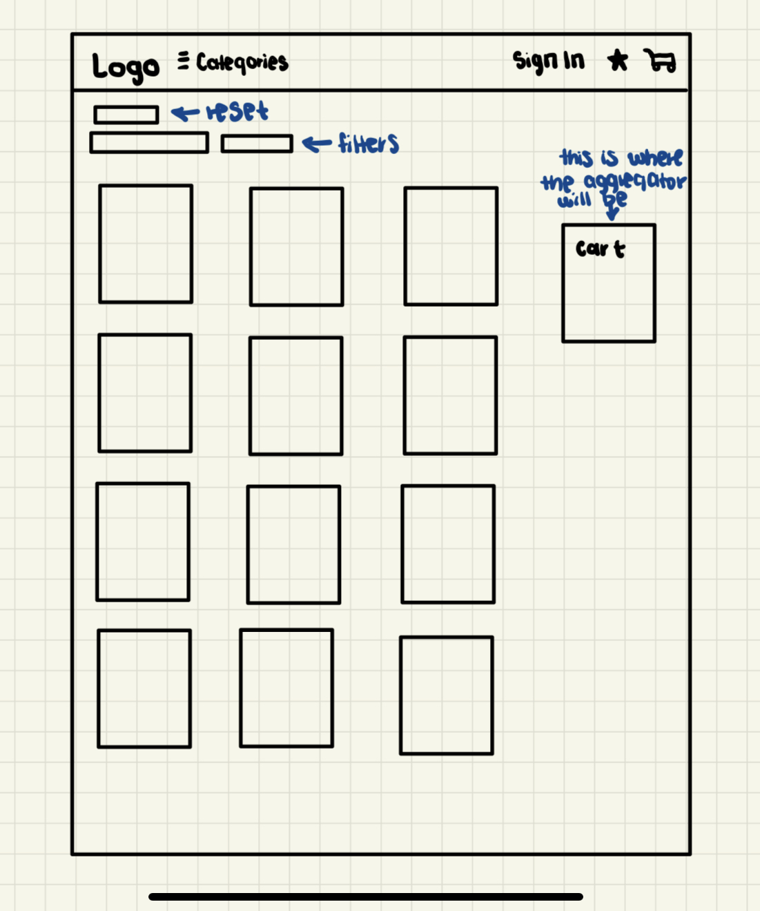

VII. Implementation
Sketches
 VII. Handin

Live Site
In this project, I conducted competitive research on major e-commerce brands like Amazon, eBay, and Etsy to identify effective strategies for organizing and aggregating information. From this analysis, I developed UrbanRoot, an innovative e-commerce platform that integrates sustainable, ethical, and creative products. UrbanRoot enhances the shopping experience by seamlessly integrating thoughtful filtering, sorting, and aggregation features, catering to the values and lifestyle preferences of millennial consumers.
In my role as a UI/UX designer, I conducted a competitive analysis of three e-commerce websites, identifying effective organizational methods and aggregators for inspiration. Leveraging these insights, I crafted a unique brand identity and website concept for a new e-commerce platform. Subsequently, I translated these designs into a minimum viable product (MVP) website, seamlessly integrating effective methods to enhance the user experience.
Completed in 2 weeks.
| Criteria | Amazon | eBay | Etsy |
|---|---|---|---|
| Filtering Functionality | Extensive filtering options including price, customer reviews, relevance, featured items, Prime eligibility, and specialized filters like "newest arrivals" and "well-reviewed." | Filtering options for price range, seller location, item condition, buying formats, etc. | Filters include price, shipping, arrival time, category, special offers, shop location, item type, and color. |
| Aggregator Usage | Shopping cart displays items added for purchase with quantity and total price. Offers "Save for Later" feature. | Shopping cart serves as the primary aggregator, displaying items with quantity and total cost. Provides "Watchlist" feature. | Favorites list allows users to bookmark items for future reference. |
| Sorting Functionality | Multiple sorting options based on relevance, price, customer ratings, and newest arrivals. | Sorting options based on price, auction end time, item condition, and popularity. | Sorting by relevance, price, and recency of listings. |
| Homepage Organization | Well-organized homepage with personalized recommendations, trending products, and promotional deals. | Homepage features personalized recommendations, popular categories, and ongoing auctions. | Curated collections, trending items, and personalized recommendations. |
| Card Interaction | Clicking on a product card redirects users to the product detail page. | Clicking on a product card redirects users to the product detail page. | Clicking on a product card typically opens a new tab, redirecting users to the product listing page. |